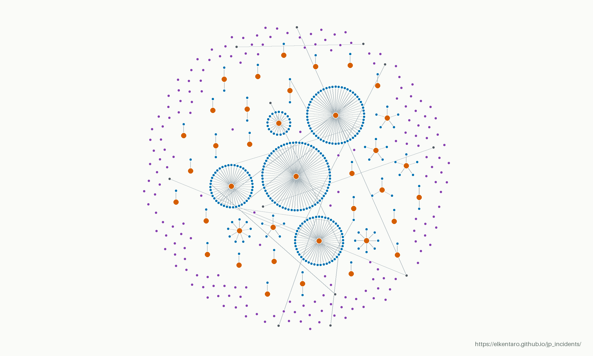

THE CONNECTIONS BEHIND THE INCIDENTS
Incident linkage map
Daily snapshotA view of how publicly reported incidents connect, with organization names and identifiers removed.
Each dot is an incident. Solid lines show recorded relationships; node colors distinguish upstream, downstream and standalone incidents. Positions show connections, not geography or severity.
- Incidents in snapshot
- 546
- With recorded connections
- 363
- Recorded connections
- 330
- Connected networks
- 36

- Upstream
- Downstream
- Standalone(183)
- Both roles
- Other related
- Recorded relationship
Standalone nodes have no recorded connection; proximity does not imply a relationship.
Reading the map
Orange marks upstream incidents, blue downstream incidents, and purple standalone incidents with no recorded connection. Teal marks incidents with both upstream and downstream roles; charcoal marks other related incidents. A missing connection does not establish that two incidents are unrelated.
About this snapshot
The static image is refreshed every 24 hours from the public incident index. Names, incident IDs, source links and incident dates are omitted; the connection pattern is retained. It is an overview of recorded relationships, not a complete map of cyber incidents in Japan.
Source data updated: · Browse the incident index